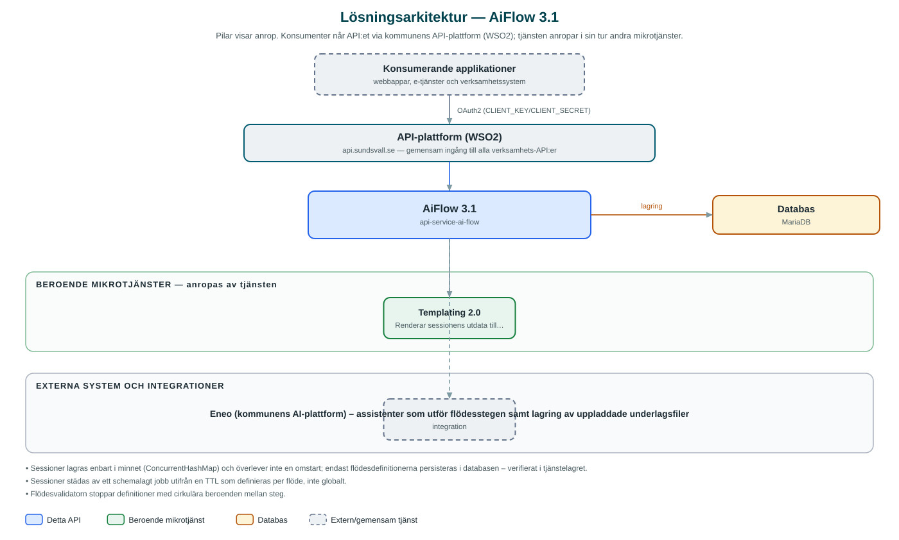

AiFlow
Kör konfigurerbara AI-flöden i flera steg – till exempel tjänsteskrivelser, bildtolkning och transkribering – där varje steg utförs av en assistent på AI-plattformen Eneo.
Om API:et
AiFlow låter kommunens applikationer köra fördefinierade AI-flöden som består av flera steg med beroenden sinsemellan. Flödesdefinitionerna lagras versionerade i databasen och beskriver vilka indata som krävs, vilka steg som ingår och vilken Eneo-assistent som utför varje steg. Med tjänsten följer bland annat flöden för tjänsteskrivelser, bildtolkning och transkribering av ljud.
En anropare skapar en session för ett flöde, lämnar in indata som text eller uppladdade filer och startar sedan hela flödet eller enskilda steg. Text ur PDF- och Word-dokument extraheras automatiskt, och filer laddas upp till Eneo som kunskapsunderlag för assistenterna. Steg körs asynkront och sessionens tillstånd kan följas tills alla steg är klara.
Resultatet kan hämtas per steg eller sammanställas till ett färdigt dokument genom Templating-API:et, som renderar sessionens utdata med en angiven dokumentmall.
Det här gör API:et
- Versionerade flödesdefinitioner – Flöden skapas, versioneras och tas bort via API:et; definitionerna valideras bland annat mot cirkulära stegberoenden.
- Sessioner med indata – En session skapas per flödeskörning och matas med textindata eller uppladdade filer; obligatoriska indata kontrolleras innan körning.
- Stegvis eller hel körning – Hela flödet eller enskilda steg kan köras, med möjlighet att automatiskt köra de steg ett steg beror på.
- Dokumentextraktion – Text extraheras ur PDF (PDFBox) och Word-dokument (Apache POI) innan innehållet skickas till assistenterna.
- Rendering till dokument – Sessionens utdata kan renderas till ett färdigt dokument via Templating-API:et med angiven mall.
- Automatisk sessionstädning – Ett schemalagt jobb tar bort sessioner som passerat flödets TTL.
API-dokumentation
API:ets samtliga resurser, parametrar och datamodeller finns beskrivna i en OpenAPI-specifikation som är hämtad ur källkodsförrådet. Den kan utforskas interaktivt i Swagger UI eller laddas ner som YAML. Programvaruförteckningen (SBOM) listar tjänstens samtliga tredjepartskomponenter med version och licens.
Teknisk dokumentation
Nedan beskrivs hur tjänsten är uppbyggd, vilka andra tjänster den anropar och vad som krävs för att driftsätta den. Informationen är härledd ur källkoden och dess konfiguration på GitHub.
Arkitektur

API:et är en mikrotjänst (Java 25, Spring Boot via kommunens gemensamma tjänsteplattform dept44 (8.0.8), byggd med Maven). Konsumenter når tjänsten via kommunens gemensamma API-plattform (WSO2) på api.sundsvall.se – tjänsten anropas aldrig direkt. Tjänsten anropar i sin tur andra mikrotjänster i kommunens tjänstelandskap. Lagring: MariaDB med Flyway-migrationer; flödesdefinitioner lagras versionerade (sessioner hålls däremot i minnet). Övriga integrationer som förekommer i koden: Eneo (kommunens AI-plattform) – assistenter som utför flödesstegen samt lagring av uppladdade underlagsfiler.
Teknikstack
- Språk: Java 25
- Ramverk: Spring Boot via kommunens gemensamma tjänsteplattform dept44 (8.0.8), byggd med Maven
- Databas: MariaDB med Flyway-migrationer; flödesdefinitioner lagras versionerade (sessioner hålls däremot i minnet)
- Övrigt: Apache PDFBox och Apache POI för dokumentextraktion, dept44-scheduler med ShedLock för sessionstädning, asynkron stegexekvering
Beroenden till andra mikrotjänster
Tjänsten anropar följande mikrotjänster. Versionerna är hämtade ur källkodens integrationsklienter.
| Tjänst | Version | Användning |
|---|---|---|
| Templating | 2.0 | Renderar sessionens utdata till ett färdigt dokument utifrån en dokumentmall. |
Programvaruförteckning
Tjänsten bygger på 277 tredjepartskomponenter fördelade på 14 olika licenser. Till skillnad från tabellen ovan, som listar andra mikrotjänster, avses här de programbibliotek som ingår i bygget. Se programvaruförteckningen för hela listan.
Konfiguration och driftsättning
- application.yml med URL och OAuth2-klientuppgifter för Eneo och Templating
- Polling av pågående steg: intervall och maxtid (app-polling, standard 2 s respektive 180 s)
- Schemaläggning av sessionstädning (stale-session-reaper): cron och ShedLock-låstider
- MariaDB-anslutning; databasschemat versionshanteras med Flyway
- Maxstorlek för uppladdade filer (25 MB per fil som standard)
Noterbart ur källkoden
- Sessioner lagras enbart i minnet (ConcurrentHashMap) och överlever inte en omstart; endast flödesdefinitionerna persisteras i databasen – verifierat i tjänstelagret.
- Sessioner städas av ett schemalagt jobb utifrån en TTL som definieras per flöde, inte globalt.
- Flödesvalidatorn stoppar definitioner med cirkulära beroenden mellan steg.
- Base64-innehåll i filuppladdningar maskeras i anropsloggarna via Logbook-filter.
- Repot innehåller färdiga flödesdefinitioner för tjänsteskrivelse, bildtolkare och transkriberare under src/main/resources/flows.
Källkod
Källkoden är öppen och finns hos Sundsvalls kommun på GitHub. I källkodsförrådet finns även instruktioner för att klona, konfigurera och starta tjänsten i egen miljö.